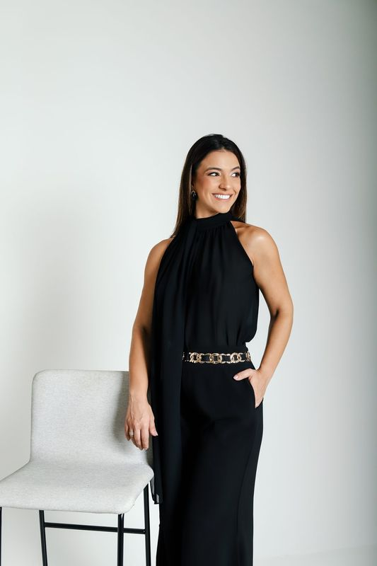

Autoliderança & Posicionamento
A vida muda quando você decide ser protagonista.
A Mentoria Edificar-se é para mulheres que seguem cumprindo papéis, entregando resultados, mantendo tudo de pé — e estão prontas para aprender a se sustentar por dentro.
Talvez você se reconheça
Isso é você?
Você cumpre todos os papéis, entrega resultados, mantém tudo de pé — mas por dentro carrega um cansaço que ninguém vê.
Vive no limite, como se precisasse provar o seu valor todos os dias.
Tenta manter a constância, mas está sempre cansada demais para sustentar o próprio ritmo.
A rotina ficou tão automática que, ao se olhar no espelho, você sente falta de si mesma.
Se alguma dessas frases te tocou, talvez seja hora de se edificar por dentro.
Tudo ao mesmo tempo.
Todos os dias.
Até que você começa
a escolher.
“Edificar-se é o ato de se fortalecer por dentro
para sustentar o que se manifesta fora.”
Larissa Belo

Bem-vinda
Eu sou a Larissa
Autora, mentora e palestrante. Ajudo mulheres a desenvolverem autoliderança e clareza para serem protagonistas das próprias vidas — organizando a rotina, as escolhas e a relação consigo mesmas.
Mineira, hoje vivo no Rio de Janeiro — e carrego comigo a certeza de que tudo começa por dentro.
Autora ✦ Mentora ✦ Palestrante
A origem
Antes da mentoria,
um livro
Edificar: Tudo Começa em Você nasceu da convicção que sustenta todo este trabalho: ninguém organiza a vida por fora sem antes se fortalecer por dentro.
O livro é o convite. A mentoria é a travessia.
O programa
A Mentoria Edificar-se
Dois meses para transformar a forma como você se relaciona com sua vida, suas escolhas e sua essência.
Não é um curso que você assiste e esquece — é uma jornada próxima, por candidatura. Não é sobre fazer mais — é sobre conduzir com critério.
-
01
Autoliderança e clareza
Enxergar onde você está, o que te sustenta e para onde quer conduzir a própria vida.
-
02
Organização da vida e da rotina
Equilíbrio real entre o pessoal e o profissional — uma rotina desenhada pelos seus critérios, não pela urgência.
-
03
Decisões, limites e constância
Decidir com segurança, dizer não sem culpa e sustentar o ritmo sem viver no limite da exaustão.
O que você vive na jornada
- Acompanhamento próximo, de mulher para mulher
- Clareza sobre prioridades — e coragem para sustentá-las
- Uma rotina reorganizada em torno do que importa para você
- Recomeços sem drama e progresso que você consegue enxergar

Sejamos honestas
A Edificar-se não é
para todas
É para você se…
- Você dá conta de tudo, mas sente que se perdeu no processo
- Quer método e acompanhamento, não só motivação
- Está pronta para olhar para dentro com verdade
Não é para você se…
- Procura fórmula mágica sem se comprometer com o processo
- Prefere um curso gravado a uma jornada acompanhada
- Não está disposta a rever as próprias escolhas
Candidaturas abertas
Pronta para retomar
a direção da sua vida?
Vagas limitadas por turma. A entrada é por candidatura — cada turma é pequena para o acompanhamento continuar profundo.
Quero reorganizar minha vidaSua candidatura é analisada pessoalmente pela Larissa.
Perguntas frequentes
O que você precisa saber
Como funciona a candidatura?
Você responde a um formulário breve e sincero sobre o seu momento. As respostas ajudam a Larissa a entender onde você está — e como caminhar ao seu lado. Os próximos passos são combinados na sequência.
Quanto tempo dura a mentoria?
Dois meses — tempo pensado para transformar com profundidade a forma como você se relaciona com sua vida, suas escolhas e sua rotina.
É online ou presencial?
O formato é apresentado durante o processo de candidatura, junto com os detalhes da turma.
Para quem é a Edificar-se?
Para mulheres que seguem entregando tudo — e sentem que estão se perdendo de si no processo. Se você busca clareza, organização e autoliderança, é para você.
E se eu não tiver tempo?
É justamente por isso que a mentoria existe. A jornada é desenhada para caber numa vida cheia — e para devolver a você o tempo que a desorganização consome.
Como sei se fui selecionada?
Sua candidatura é analisada pessoalmente pela Larissa, e você recebe o retorno com os próximos passos.
A vida muda quando você decide